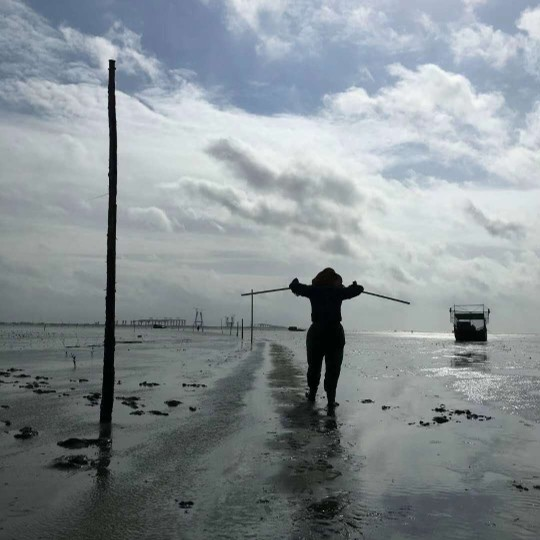
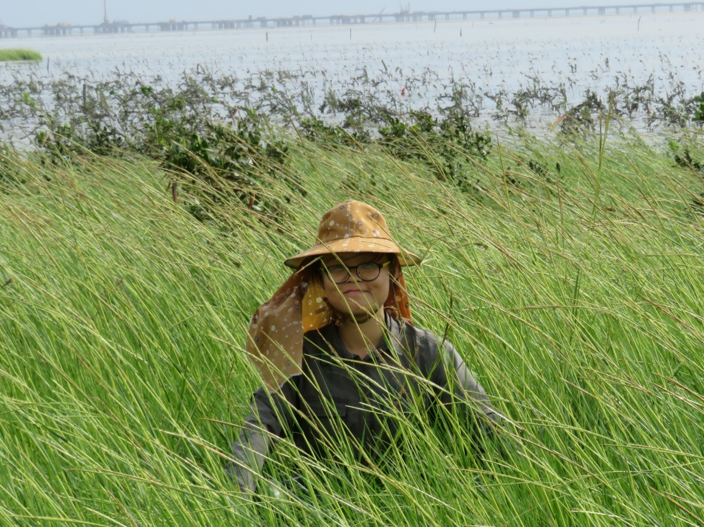

Personal information
Coastal wetlands are awesome, let us go muddy together.
Jiayu enjoys guitar, photography, snooker, woodcarving, and swimming.

Postdoctoral work experience
Xiamen University (2025-), Co-supervisor: Yihui Zhang
Education experience
PhD, College of the Environment and Ecology, Xiamen University (2020-2024), Supervisor: Yihui Zhang
Master degree, College of the Environment and Ecology, Xiamen University (2017-2020), Supervisor: Yihui Zhang
Bachelor degree, School of Forestry, Northeast Forestry University (2013-2017)
Foundation
China Postdoctoral Science Foundation, Functional trait responses of clonal plants to inundation and salinity in coastal salt marshes of southern China (2026-2027)
Contact
Jiayu Wang 王佳瑜 (J.Y. Wang, She/Her)
College of the Environment and Ecology, Xiamen University
Jinquan building B406, Xiang an campus, Xiamen, China
Email: wangjy147@foxmail.com
Address
College of the Environment and Ecology, Xiamen University
Key Laboratory of the Ministry of Education for Coastal and Wetland Ecosystems, College of the Environment and Ecology, Xiamen University, Xiamen, Fujian 361102, China
National Field Observation and Research Station (Fujian Taiwan Strait) for Marine Ecosystem, Xiamen University, Zhangzhou 363000, Fujian, China